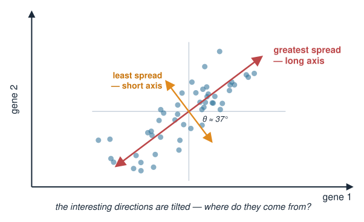
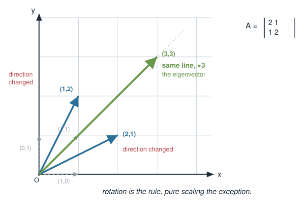
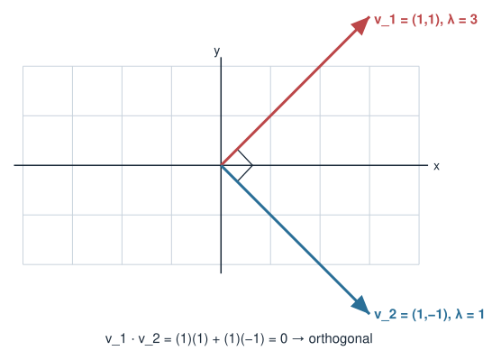
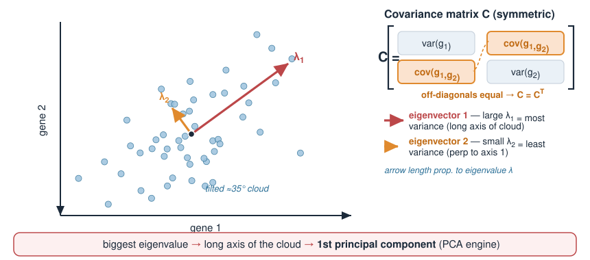
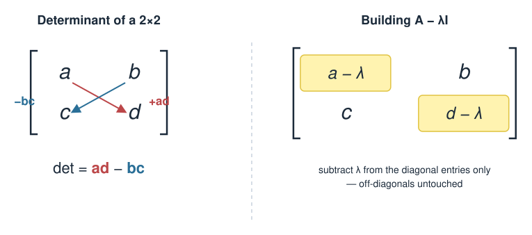

In Matrices as transformations, a matrix is a function that moves vectors around — it stretches, rotates, mixes the axes. Today we hunt for the special directions a matrix leaves alone.
Most vectors get rotated by a matrix. A few special ones only get scaled — those are eigenvectors.
The amount of scaling is the eigenvalue\(\lambda\), and the whole idea is one equation: \(A\mathbf{v} = \lambda\mathbf{v}\).
How to find them by hand in the cases that matter: check a candidate, read a diagonal or triangular matrix, the symmetric\(2\times2\) pattern, and geometry. Everything else: eigen() in R.
Why symmetric matrices (like a covariance matrix) are special: real eigenvalues, orthogonal eigenvectors.
Biology: the eigenvectors of a covariance matrix point along the main axes of variation in a dataset — the seed of PCA (in the Applications block).
This is a concept day. The exam asks you to check and find eigenvectors by hand in these simple cases, so practise them on paper. No determinants are needed (the classic determinant recipe is a bonus at the end).
A biology picture first
Measure two genes across many cells and plot each cell as a point (gene 1 on x, gene 2 on y).
The two genes are co-regulated, so the cloud is a tilted, elongated ellipse.
There is one direction along which the cells spread the most — the long axis of the cloud.
And a perpendicular direction with the least spread — the short axis.
These two axes are not the x- and y-axes. They are tilted. Where do they come from?
They are the eigenvectors of the data’s covariance matrix. Today we learn what that sentence means.

Most vectors get rotated
Take a matrix \(A\) and feed it different input vectors. Watch the direction of the output.
\(A\begin{pmatrix}1\\0\end{pmatrix} = \begin{pmatrix}2\\1\end{pmatrix}\) — pointed along x, came out tilted up. Direction changed.
\(A\begin{pmatrix}0\\1\end{pmatrix} = \begin{pmatrix}1\\2\end{pmatrix}\) — pointed along y, came out tilted. Direction changed.
\(A\begin{pmatrix}1\\1\end{pmatrix} = \begin{pmatrix}3\\3\end{pmatrix}\) — pointed along the diagonal, came out on the same line, just longer!
That last one is special: \(A\) only scaled it (by 3), without rotating it.

The definition: \(A\mathbf{v} = \lambda\mathbf{v}\)
A nonzero vector \(\mathbf{v}\) is an eigenvector of \(A\) if \(A\) only scales it:
\[A\mathbf{v} = \lambda\mathbf{v}\]
\(\lambda\) (a scalar) is the eigenvalue — the stretch factor for that direction.
“Eigen” is German for own / characteristic: these are the matrix’s own special directions.
Reading the equation: transforming \(\mathbf{v}\) with \(A\) gives the same thing as just multiplying \(\mathbf{v}\) by the number \(\lambda\). The matrix acts like a plain number on that direction.
From the previous slide: \(A\begin{pmatrix}1\\1\end{pmatrix} = \begin{pmatrix}3\\3\end{pmatrix} = 3\begin{pmatrix}1\\1\end{pmatrix}\), so \(\mathbf{v}=(1,1)\) is an eigenvector with eigenvalue \(\lambda = 3\).
The whole line is special
If \(\mathbf{v}\) is an eigenvector, so is \(2\mathbf{v}\), \(-\mathbf{v}\), \(0.5\mathbf{v}\) — any nonzero multiple:
\(\mathbf v = (1, -1)\): \(\ A\mathbf v = (2-1,\ 1-2) = (1, -1) = 1\cdot\mathbf v\). Yes, eigenvector with \(\lambda = 1\).
\(\mathbf v = (1, 2)\): \(\ A\mathbf v = (2+2,\ 1+4) = (4, 5)\). Is \((4, 5) = \lambda(1, 2)\)? It would need \(\lambda = 4\)and\(\lambda = 2.5\). No.
The eigenvalue is read off by comparing entries: divide each entry of \(A\mathbf v\) by the matching entry of \(\mathbf v\). Both ratios must agree, and they equal \(\lambda\).
Eigenvalues you can read off
Diagonal matrix: each axis is only scaled, so the axes are the eigenvectors and the diagonal entries are the eigenvalues.
One eigenvector comes for free: \(A(1, 0) = (3, 0) = 3\,(1, 0)\).
The other is found on the next slide.
Finding the eigenvector for a known \(\lambda\)
Once you know \(\lambda\), the eigenvector is a small linear system. Start from \(A\mathbf{v} = \lambda\mathbf{v}\) and move everything to one side (write \(\lambda\mathbf{v} = \lambda I\mathbf{v}\) so the shapes match):
\[(A - \lambda I)\mathbf{v} = \mathbf{0}, \qquad A - \lambda I = \text{$A$ with $\lambda$ subtracted from each diagonal entry.}\]
For \(A = \begin{pmatrix} 3 & 1 \\ 0 & 2 \end{pmatrix}\) and \(\lambda = 2\):
For a symmetric matrix with equal diagonal entries, the eigenvectors are always the two diagonals of the plane:
\[A = \begin{pmatrix} a & b \\ b & a \end{pmatrix}: \qquad A\begin{pmatrix}1\\1\end{pmatrix} = (a+b)\begin{pmatrix}1\\1\end{pmatrix}, \qquad A\begin{pmatrix}1\\-1\end{pmatrix} = (a-b)\begin{pmatrix}1\\-1\end{pmatrix}\]
For our \(A = \begin{pmatrix} 2 & 1 \\ 1 & 2 \end{pmatrix}\): \(\lambda_1 = 2 + 1 = 3\) for \((1,1)\) and \(\lambda_2 = 2 - 1 = 1\) for \((1,-1)\).
Notice: \(\mathbf{v}_1\cdot\mathbf{v}_2 = (1)(1) + (1)(-1) = 0\) — the two eigenvectors are orthogonal!

Eigenvectors you can see
Think about what the matrix does; the directions it leaves on their own line are the eigenvectors.
Check your answer: the eigenvalues always add up to the trace (sum of the diagonal). For \(\begin{pmatrix} 2 & 1 \\ 1 & 2 \end{pmatrix}\): \(3 + 1 = 4 = 2 + 2\). ✓
For any other matrix: let R do it with eigen() (Eigenvalues in R).
Try it: hunt for eigen-directions
Symmetric matrices are special
A matrix is symmetric if \(A = A^\top\) (it equals its own transpose — mirror across the diagonal). Our example \(\begin{pmatrix} 2 & 1 \\ 1 & 2 \end{pmatrix}\) is symmetric (\(b = c = 1\)).
For symmetric matrices (a theorem — the spectral theorem):
All eigenvalues are real (no awkward complex numbers).
Eigenvectors for different eigenvalues are orthogonal (perpendicular).
This is exactly what we just saw: real eigenvalues \(3, 1\) and perpendicular eigenvectors \((1,1) \perp (1,-1)\).
Why biologists care: covariance is symmetric
For a dataset (e.g. expression of 2 genes, \(x\) and \(y\), across many cells), the covariance matrix\(C\) summarises spread:
\(C\) is symmetric (cov\((x,y)=\) cov\((y,x)\)), so by the spectral theorem:
its eigenvectors are orthogonal → they form clean perpendicular axes,
its eigenvalues are real and positive → the amount of variance along each axis.
The eigenvector with the largest eigenvalue points along the long axis of the data cloud — the direction of greatest variation. That is PCA (taught in the Applications block). Today you built its engine.

Special cases & gotchas
Repeated eigenvalue:\(\begin{pmatrix} 2 & 0 \\ 0 & 2 \end{pmatrix}\) has \(\lambda = 2\) twice. Every direction is an eigenvector (it scales everything equally).
Diagonal matrix: eigenvalues are just the diagonal entries; eigenvectors are the axes.
Complex eigenvalues: a pure rotation \(\begin{pmatrix} 0 & -1 \\ 1 & 0 \end{pmatrix}\) has no real eigenvector — it rotates everything, leaving no direction fixed. (This can’t happen for symmetric matrices.)
Scale freedom: eigenvectors are only defined up to length and sign.
eigenvectors of covariance = axes of variation (PCA engine)
Next (Eigenvalues in R): compute all of this in R with eigen.
Bonus: the characteristic equation (not for exam)
Where do eigenvalues come from in general? From \((A - \lambda I)\mathbf{v} = \mathbf{0}\): we need a nonzero\(\mathbf{v}\) that \(A-\lambda I\) sends to zero. A matrix can only crush a nonzero vector to zero if it is singular — i.e. its determinant is zero:
\[\boxed{\ \det(A - \lambda I) = 0\ }\]
For a \(2\times2\), \(\det\begin{pmatrix} a & b \\ c & d \end{pmatrix} = ad - bc\), so
\[\det(A - \lambda I) = (a-\lambda)(d-\lambda) - bc = 0,\]
a quadratic in \(\lambda\).

Bonus material: you do not need to memorise determinants for the exam.
So \(\lambda_1 = 3,\ \lambda_2 = 1\) — the same as the symmetric pattern gave.
Two checks:
Sum of eigenvalues = trace: \(3 + 1 = 4 = 2 + 2\). ✓
Product of eigenvalues = determinant of \(A\): \(3 \times 1 = 3 = (2)(2) - (1)(1)\). ✓
The same method works for matrices without a pattern, e.g. \(\begin{pmatrix} 2 & 1 \\ 1 & 0 \end{pmatrix}\) gives \(\lambda^2 - 2\lambda - 1 = 0\), so \(\lambda = 1 \pm \sqrt 2\). A rotation gives \(\lambda^2 + 1 = 0\): no real solution.
Bonus material: you do not need to memorise determinants for the exam.